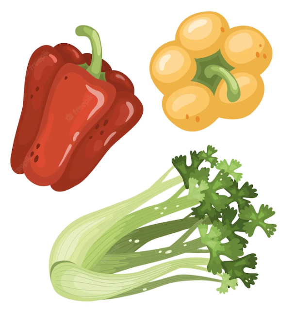
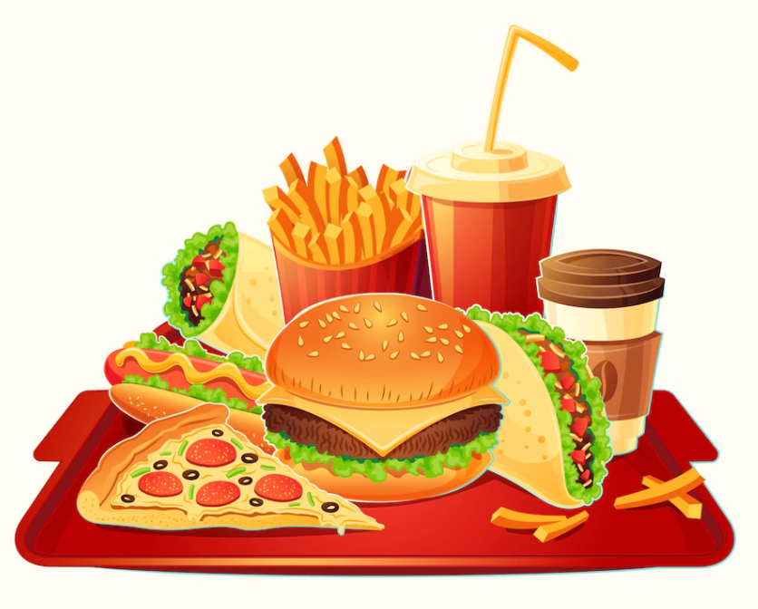
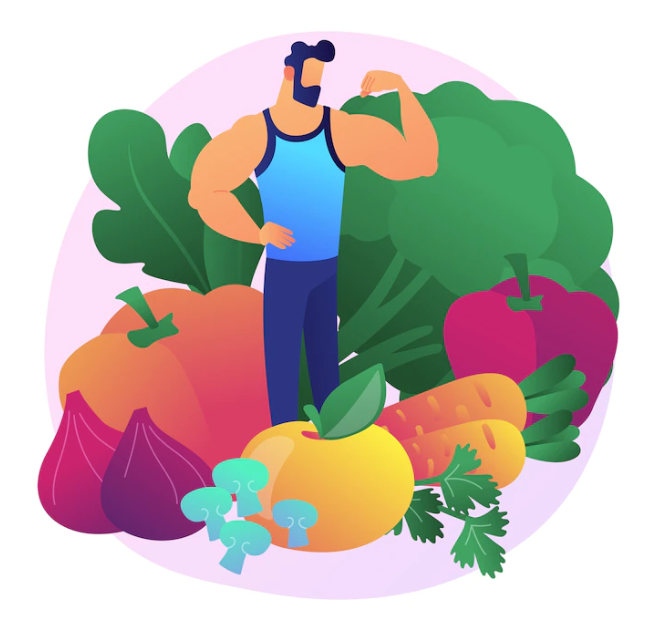
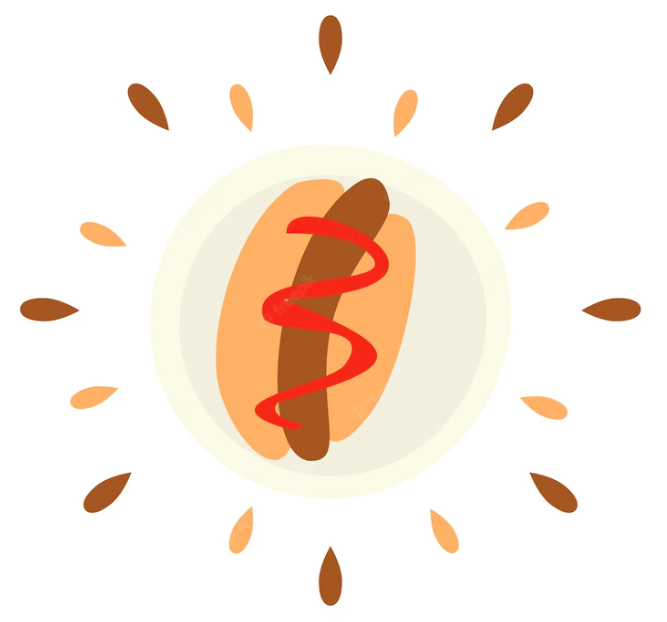
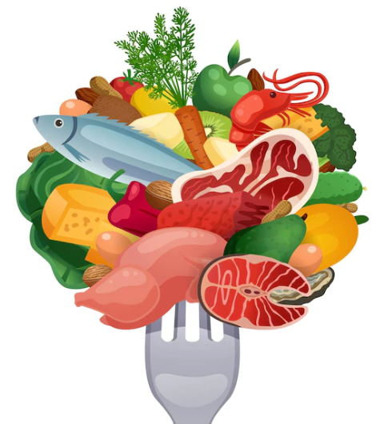
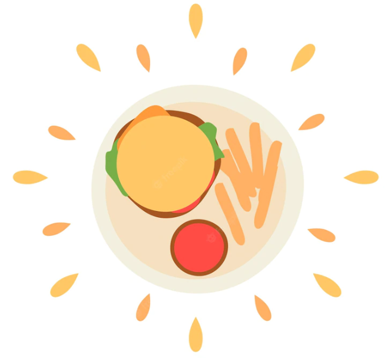

|  | Aim for Fitness Maintain or work toward a healthy weight. Be physically active every day—return fun and play to your life. Get moderate to vigorous physical activity for at least 30 minutes a day 5 days a week. Healthy eating provides the sustained energy you need to be physically active. Learn to manage your stress with exercise, healthy eating, relaxation, and good coping skills. |
| The Bad Habit: Mindless Eating Cornell University food psychologist Brian Wansink, PhD, discovered that the larger the plate or bowl you eat from, the more you unknowingly consume. In one recent study, Wansink found that moviegoers given extra-large containers of stale popcorn still ate 45 percent more than those snacking on fresh popcorn out of smaller containers holding the same amount. |  |
|  | Build Healthy Eating Habits Eat a variety of vegetables, especially dark green, red, and orange vegetables (3 or more servings a day). Eat a variety of fruits (2 or more servings a day). Eat whole-grain, high-fiber breads and cereals (3 to 6 servings a day). Reduce or eliminate refined or processed carbohydrates; most of the grains in your diet should be whole grains. Drink fat-free or low-fat milk and eat low-fat dairy products. |
| The Bad Habit: Endless Snacking Here's a bad habit many are guilty of: snacking round-the-clock, often on high-calorie foods that are full of empty carbs. A recent study at the University of North Carolina found that it isn't just a problem for adults: kids are snacking more and more often on unhealthy junk food including salty chips, soda, and candy. |  |
|  | To Lose Weight Reduce the number of calories you eat daily. Eat smaller portions—don't "upsize" your meals at fast food restaurants. Follow the dietary guidelines above. Eliminate all sugar-added drinks from your diet. You can drink 100% fruit juice, unsweetened, but limit servings to one or two a day. Drink more water. Decrease the amount of time spent in sedentary activities, especially watching television. Use your screen-free time working on hobbies, house cleaning, yard work, or engaging in fun activities. |
| The Bad Habit: Eating Too Quickly Wolfing down your food, whether you're snacking or eating a meal, doesn't give your brain time to catch up with your stomach. Your brain doesn't signal that you're full until about 15 to 20 minutes after you've started eating. If you gulp down your meal in 10 minutes or less, you could end up eating way more than you need. In a study of 3,200 men and women, Japanese researchers found that eating too quickly was strongly associated with being overweight. |  |